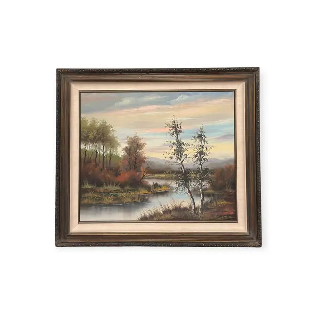
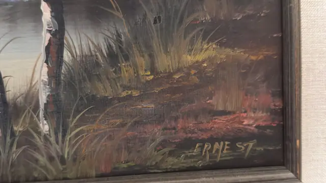
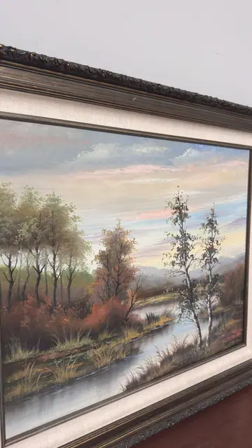
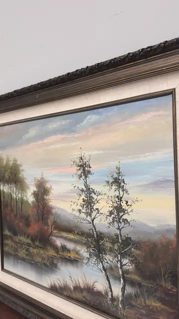

Paintings & Prints
Autumn River Landscape with Birch Trees, ERNEST, Signed, Framed
ERNEST · third quarter of the 20th century
Price Upon Request




About the Item
ERNEST. A tranquil autumn landscape: a still river cuts diagonally through the composition, mirroring a wide pastel sky streaked with pink, apricot and pale blue. Two slender white birches rise at the centre right, their sparse foliage dabbed in olive and gold, while a bank of rust and copper scrub runs along the left shore toward distant blue hills. The paint is applied thickly with a loaded brush and palette knife, with strong impasto in the reeds and clouds. Framed in an ornate dark bronze and gilt moulding with a linen liner. Medium: oil on canvas. Signed lower right of the canvas, in ochre paint, reading "ERNEST". Inscribed on the reverse or mount: ERNEST (painted signature, lower right of the canvas). Condition: Canvas weave shows through thin passages; small rubs and losses to the gilding on the frame corners; no visible tears or craquelure.
Details
- Creator:
- ERNEST
- Creation Year:
- third quarter of the 20th century
- Dimensions:
- Height: 27.25 in (69.22 cm)
Width: 30.5 in (77.47 cm)
outside of frame - Medium:
- oil on canvas
- Period:
- 20Th
- Condition:
- Offered in the condition shown in the photographs.
- Reference Number:
- VO-139
- Documentation:
- no certificate photographed
- Gallery Location:
- ERNEST (painted signature, lower right of the canvas)